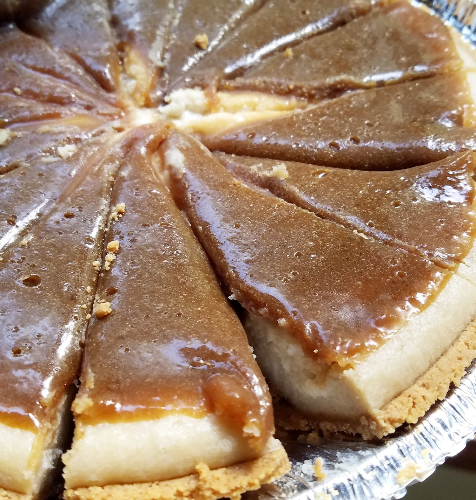
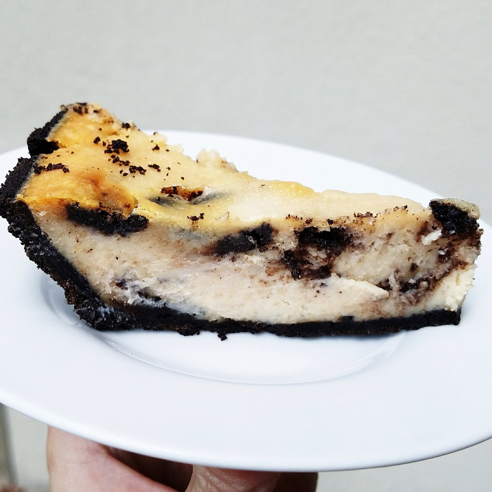

Simple Baked Vegan Cheesecake


Hiii. How about this baked vegan cheesecake, huh!? It is so amazingly soft and surprises anyone who tries it that it's completely dairy free. This recipe is simple, sweet, and versatile since you can add any fun additions to the recipe that you want! Hang in there for the recipe below!
Let's just pretend I wasn't on a hiatus for...oh I don't know...TWO MONTHS. Since then, I feel like everything has changed, and yet nothing at all. I've been focusing on my happiness and the forms of media I take in, and it's helped my mindset stay (more or less) out of the negatives. It's crazy how you mindlessly take in media from Instagram, people you hang around, Youtube, etc... Then before you know it you're led to think one way or another, view yourself one way, have opinions about the actions of others, and just generally feel negative. I know so many of us are guilty of mindlessly scrolling Instagram out of boredom, and all of a sudden you feel like you aren't fit enough, don't look good enough, need to do x y and z to be better. It's just horrid...but often times I just don't know how to fill my time.
Nick's been magnificent about helping me find ways to immerse my mind. I get bored so easily so finding something that totally grabs my attention and keeps me busy is difficult. But I've been getting into more video games, trying to color more, distracting myself by doing my hair or makeup when I feel sad, etc. I've been playing Nintendo Switch games (particularly Splatoon!) and I've recently been playing a lot of Pokemon Sun on the 3ds that Nick got me in the Spring. It's crazy how something viewed as "lazy" is actually the most positive and re-energizing thing for me lately. Video games are so innocent and so uplifting in small doses, and it's been great.
In the times between, I've been staying busy with recipe development work for companies and improving my photography skills. Nick has so much camera knowledge and it's been fun learning things from him and putting them to the test in my photoshoots. It makes me feel great :) Learning is always fun and I hope that I always have things to learn in my life. I've also just been baking for fun because, of course I have. Baking will always and forever be a part of me. I've been trying to tackle veganizing recipes that have always scared me since going vegan. One of the biggest on the list for me: cheesecake.
It took me a couple tries, but I finally got it right! I love this recipe and it's easy to add variations. For example, I made an oreo version by adding oreos to the batter. I also made a caramel version by drizzling a vegan caramel on top. You could swirl cookie dough into the batter, add strawberries on top, swirl peanut butter on top before baking, you name it! I'm so happy I have a go-to up my sleeve now for parties and events. My coworkers and Nick absolutely loved this recipe the times I brought it into work. People weren't sure how it could possibly be dairy free and vegan. Which is always a good thing if you ask me.
Try this out and let me know what you think!! What variation of cheesecake would you make first!?
Simple Baked Vegan Cheesecake
Serves: 12
Crust
-
Graham pie crust (this one is vegan/no honey)
Filling
-
1 cup raw cashews, soaked
-
1, 13.5 oz can coconut milk (chilled, top part only)
-
1 package tofutti vegan cream cheese (8 oz)
-
3/4 cup sugar
-
2 tsp vanilla extract
-
1/2 TBSP cornstarch
-
2 TBSP flour (Optional)
Before baking, soak the cashews in water for at least 4 hours. Strain before using. Alternatively if you're in a crunch for time, you can boil the cashews for 15-20 and strain before using.
Preheat the oven to 325 F. In a food processor or blender, simply blend all of the filling ingredients. You want to use only the thick, top portion of the coconut cream and dispose of the water layer at the bottom. Chilling in the fridge is what makes this separation occur. Blend for 2-3 minutes until very very thick and creamy.
Pour the filling into the pie crust and bake at 325 F for 70-80 minutes. Remove from the oven and let sit at room temperature to cool for at least one hour. Place in the fridge overnight to fully set. Then cut into 12 slices and enjoy!
Variations
For an oreo cheesecake, use this crust and swirl 3 crushed oreos into the cheesecake filling before baking.
For a caramel cheesecake, bake as normal. Then pour a vegan caramel on top while it is sitting at room temperature. To make a simple caramel, melt together 1/2 cup brown sugar, 1/4 cup earth balance vegan butter, and up to 2 TBSP almond milk until the perfect consistency is reached.